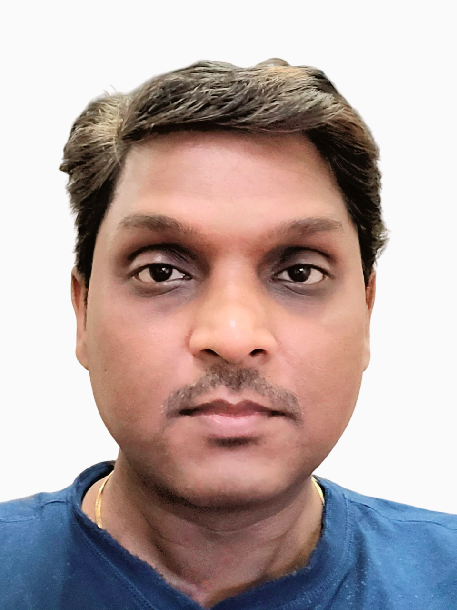

Karthik Kumar V MSoftware Project Manager | Software Engineer | Creator |
About MeAs a software project manager, I leverage my 19 years of software industry experience and my certifications in project management, scrum, and lean six sigma to initiate and implement software development projects using the agile-scrum methodology. I facilitate sprint planning, daily scrum meetings, sprint reviews, and retrospective reviews, ensuring the delivery of high-quality software solutions that meet the customer's needs and expectations. |
Skills
|
ProjectsPreviously, I was a technology consultant and entrepreneur in the audio and video industry domains, where I collaborated with and successfully facilitated the implementation of cost-effective, professional-grade software solutions for over 30 existing popular audio recording studio clients. I also empowered over 150 individuals to establish their own home studio setups, and over 20 individuals to become self-sustained small business owners within the industry. I was also working as a project manager and consultant from 2004 to 2017 with companies as of Cognizant, Computer Sciences Corporation and Oracle financial services. My mission is to use my skills and expertise in agile project management, software project management, and agile methodologies to create value and impact for my clients and stakeholders. |
ContactEmail: your.email@example.com LinkedIn: LinkedIn Profile GitHub: GitHub Profile |